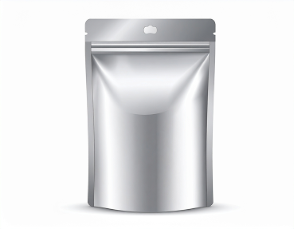

BØNNER
ESPRESSO BØNNER
Karakter: Mørk chokolade, mørke bær og marcipan. Behagelig sødme med en elegant syrlighed. Bønnesorter og Forarbejdning: 70% Full Bloom, Bourbon, Catuai, NaturalOmråde: Daterra, Brasilien 30% Kibugu, SL28, SL34, WashedOmråde: Embu, Kenya Risteprofil: Mellem ristet
FIND BØNNERNE HER KLASSISKE SMAGE
Karakter: Mørk chokolade, mørke bær og marcipan. Behagelig sødme med en elegant syrlighed. Bønnesorter og Forarbejdning: 70% Full Bloom, Bourbon, Catuai, NaturalOmråde: Daterra, Brasilien 30% Kibugu, SL28, SL34, WashedOmråde: Embu, Kenya Risteprofil: Mellem ristet
FIND BØNNERNE HERUDFORDRENDE PÅ DET SYRLIGE
Karakter: Mørk chokolade, mørke bær og marcipan. Behagelig sødme med en elegant syrlighed. Bønnesorter og Forarbejdning: 70% Full Bloom, Bourbon, Catuai, NaturalOmråde: Daterra, Brasilien 30% Kibugu, SL28, SL34, WashedOmråde: Embu, Kenya Risteprofil: Mellem ristet
FIND BØNNERNE HERUDFORDRENDE PÅ DET SØDE
FILTER BØNNER
Location: Jalapa department, Guatemala Farmer: Jose Roberto Monterroso Pineda Producer: El Morito Varietal: Washed Processed Yellow Gesha Flavour Notes: Mirabelle Plum, Citrus, Florals Sweetness: ●●●○○Body: ●●○○○Acidity: ●●●●○
FIND BØNNERNE HERUDFORDRENDE PÅ DET SYRLIGE
Karakter: Solbær, brombær og bergamotte. Juicy, kompleks og læskende. Bønnesort: SL28/SL34, Ruiru II Forarbejdning: Washed Område: Embu Højde: 1700 masl. Producent: Mindre landbrug Risteprofil: Lysristet
FIND BØNNERNE HERUDFORDRENDE PÅ DET SØDE
Karakter: Mørk chokolade, mørke bær og marcipan. Behagelig sødme med en elegant syrlighed. Bønnesorter og Forarbejdning: 70% Full Bloom, Bourbon, Catuai, NaturalOmråde: Daterra, Brasilien 30% Kibugu, SL28, SL34, WashedOmråde: Embu, Kenya Risteprofil: Mellem ristet
FIND BØNNERNE HER